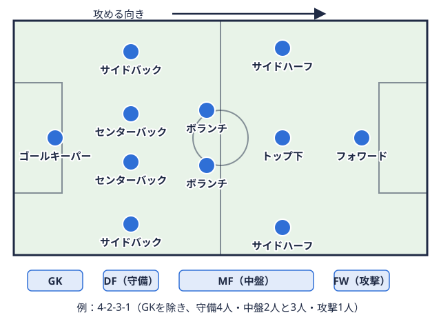
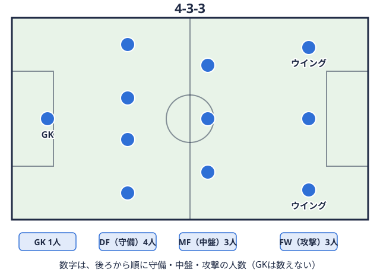
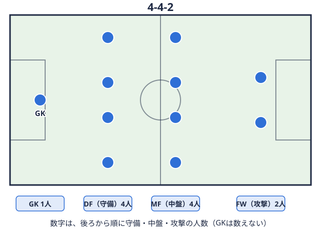

技術・戦術 2026-11-18
サッカー フォワードの役割と求められる能力｜大学サッカー編
大学のサッカー部に入ると、「点を取れ」と言われる一方で、守備のスイッチ役や、ボールを収めて味方を上げる役まで任されて戸惑うフォワード相手ゴールの近くでプレーし、得点を取ることが最も大きな役割の選手。 
なお、ポジション全体の比較はサッカーのポジション適性・特徴の記事で扱っています。ここではフォワードに絞って掘り下げます。
フォワードの役割は「得点」が中心、ただしそれだけではない
Jリーグ公式サイトのポジション解説では、フォワードは相手ゴールの近くでプレーする選手で、得点を奪うことが最も重要な役割とされています。人数はチームのスタイルによって異なり、一般的に1〜3人で構成されるという説明です（出典は記事末尾）。
一方で、サカステ広島などの解説では、得点以外にも次のような役割が挙げられています。
- 背後への動き出し: 相手の最終ラインゴールキーパーの前で、横に並んで守る守備の選手たちの列。この位置の高さが、守り方の特徴になる。
 用語辞典で見るの裏に入り込み、チャンスを作る
用語辞典で見るの裏に入り込み、チャンスを作る - ポストプレー: 体を使ってボールを収め、味方の上がりを待つ
- 前線からの守備: 相手のビルドアップ自陣の後ろの方から、パスをつないで少しずつ前に進み、攻撃を組み立てること。用語辞典で見るを妨害し、ボールを回収するきっかけを作る
- スペースを作る動き: 相手の守備者を引きつけ、味方が使える場所を空ける
どの役割にどの程度の比重を置くかは、チームの戦い方や監督の指示によって変わります。自分が試合で何を期待されているのかを、監督やコーチに言葉で確認しておくと、練習の優先順位も決めやすくなります。
フォワードの3つのタイプ：センターフォワード・ウイング・セカンドトップ
Jリーグ公式サイトは、フォワードをセンターフォワード、ウイング相手ゴール近くの左右の端から、ドリブルやゴール前へのパスで得点に絡む攻撃の選手。 
| タイプ | 主な位置 | 公式サイトなどで挙げられている役割 |
|---|---|---|
| センターフォワード | 中央の最前線 | パスを受けて得点する、ポストプレーで起点になる、相手の背後を突く |
| ウイング | サイド（サイドハーフ中盤の左右の端でプレーし、ドリブルで仕掛けたり、後ろの選手と協力して攻撃に厚みを出したりする役。用語辞典で見るより高い位置） | ドリブル、クロス、中に切れ込んでのシュートなど、より直接的に得点へ絡む |
| セカンドトップ | センターフォワードより少し下がった位置 | 落としたボールを受ける、エリア内でのフィニッシュ、スペースへの飛び出し |
Jリーグ公式サイトでは、セカンドトップはトップ下中盤の選手のうち、攻撃の最前線の選手のすぐ後ろでプレーし、チャンスを作ったりシュートを狙ったりする役。用語辞典で見ると役割が似ているものの、より得点を奪う仕事が求められると説明されています。大学のチームでは、フォーメーション選手の並べ方。4-4-2のように、ゴールキーパーを除き、後ろから守備・中盤・攻撃の人数を並べて表す。 
動き方はフォーメーションで変わる
Activelの解説では、1トップと2トップで動き方のポイントが整理されています。1トップでは中央にとどまってポストプレーや裏への抜け出しに専念すること、2トップでは互いを見ながら、一人が中盤に下りたらもう一人が裏へ抜けるなど、違う動きでマークを外すことが挙げられています。
ここから言えるのは、フォワードの「正解の動き」は、自分一人では決まらないということです。隣の選手や中盤の選手との距離、パスを出す選手が顔を上げるタイミングなど、味方との共有が前提になります。練習の合間に、パサーと「どのタイミングで動くか」をすり合わせておくことは、技術練習と同じくらい大切だと考えられます。
求められる能力を5つに整理する
ここまでの解説を踏まえ、大学サッカーのフォワードに求められる能力を、編集部で次の5つに整理しました。複数の解説に共通する内容をまとめたもので、すべてのチームで同じ優先順位になるわけではありません。
- シュート技術と冷静さ: 角度や距離、体勢が違う場面でも枠に飛ばす力
- ボールを扱う力: 狭いスペースでのトラップ、相手を外すドリブル
- 位置取りと動き出し: ボールを持っていないときに、ゴールが生まれそうな場所へ入る判断
- 連携の力: パスを要求するタイミング、味方が使うスペースを作る動き
- 守備への参加: 前線からの追走やパスコースの限定
デサントの解説やサカステ広島の記事でも、シュート力・ボールコントロール・オフザボールの動き・守備への参加は、ほぼ共通して挙げられています。5つのうちどれを伸ばすべきかはチームの戦い方や自分の現状によって変わるため、まずは監督やコーチに「今の自分に足りない点」を聞いてみるのが近道です。
練習の優先順位をどう考えるか
練習時間が限られる中では、すべてを同じ比重で行うのは現実的ではありません。次のように整理してみてください。
| 項目 | 取り組み方の例 | 一人でできるか |
|---|---|---|
| シュート | 角度・距離・ボールの状態（ドリブル後、ダイレクトなど）を変えて反復する | 壁やゴールがあれば可能 |
| トラップ | 空中のボールと転がるボールの両方を、次のプレーを意識して止める | 壁があれば可能 |
| 動き出し | 守備者の視野の外から入る、斜めと直線を混ぜるなど、走り方に変化をつける | 相手やパサーが必要 |
| ヘディング | クロスに合わせるタイミングとインパクトを確認する | 一部は可能 |
| 1対1 | 守備者との駆け引きと、GKゴールを守る選手で、チームで唯一、ペナルティエリア内で手を使える。パスをつなぐ役もこなす。用語辞典で見るとの1対1でのフィニッシュ | 相手が必要 |
JFAのフィジカルフィットネスプロジェクトが公開している「ストライカーキャンプ」のアジリティ練習（2022年・U-14の16人が対象）では、ゴール前のシュート練習で使うフォワード特有の動きを取り出して行ったとされています。内容は、ジグザグ走からの加速、ゴール正面・降りる方向・スピード・ふくらみの大きさに変化をつけるプルアウェイの動き、チェックの動きからシュート位置に入るクロスへの入り方の3つです。対象は大学生ではありませんが、フォワードの動き出しが「練習で分解して鍛えられる技術」として扱われていることがわかります。
自主練習のメニューの組み方は、大学サッカー部の個人練習メニューの記事や練習メニューの組み立て方の記事を参考にしてください。
体格に自信がない場合の考え方
「体が大きくないとフォワードは難しいのでは」と不安に思う部員もいるでしょう。サカステ広島の解説では、小柄な選手の場合、物理的な強さで勝負するのではなく、素早い動き出し、低い重心を生かしたドリブル、足元の技術、正確で素早いシュートで対抗するという考え方が紹介されています。また同記事は、フォワードの動きはターゲット型、スピード型、テクニック型、プレッシング型といったプレースタイルによっても変わると整理しています。
つまり、体格だけで向き不向きが決まるわけではなく、自分の強みがどのタイプに近いかを見極めることが一つの方法です。強みをどう生かすかは、チームの戦術との相性にも左右されるため、監督やチームメイトと話し合いながら探っていくとよいでしょう。
2026年関東1部のデータで見る「得点」と「勝敗」の関係
フォワードの評価は得点数で語られがちですが、チームの成績はそれだけでは決まりません。本サイトの関東大学サッカーリーグ1部の記録室には、チームごとの総得点・総失点と勝率が掲載されています。2026年11月18日時点（各チーム21試合・全126試合）の編集部集計から、いくつかの数字を見てみましょう。
- リーグ全体の総得点は346点で、1試合あたりの合計得点は約2.7点です（346点÷126試合）
- 総得点が最も多いのは日本大学の39点（1試合あたり約1.9点）。次いで日本体育大学が37点、国士舘大学が34点
- 総得点が最も少ないのは駒澤大学の22点（1試合あたり約1.0点）。明治大学が23点で続く
- 日本体育大学は総得点が2番目に多い一方で、総失点が38点あり、勝率は12チーム中8位（7勝6分8敗）
- 国士舘大学は総得点が3番目で、総失点が18点と最も少なく、勝率は1位（13勝4分4敗）
ここから読み取れるのは、「得点が多いチーム＝成績が良いチーム」とは限らない、ということです。得点は中盤や守備を含めたチーム全体の結果であり、得点数だけで個々のフォワードの価値は測れません。数字は進行中のシーズンの途中経過であり、今後更新されます。また、得点者別の記録は本サイトでは集計していません。
自分が所属するリーグのチームの得点力や守備の傾向を知るには、順位表やチーム一覧も役立ちます。たとえば日本大学のチームページや国士舘大学のチームページを見比べると、得点の取り方や失点の少なさなど、チームごとの特徴を把握しやすくなります。関西のリーグを確認したい場合は、関西学生サッカーリーグ1部のチーム一覧もあわせてご覧ください。
オフサイドと怪我への備え
背後への動き出しを武器にするフォワードにとって、オフサイド攻撃側の選手が、味方がボールを蹴った瞬間に相手ゴールに近い不利な位置にいて、プレーに関わると取られる反則。用語辞典で見るの理解は欠かせません。ラインとの距離を計算しながら、パスが出る瞬間に動き出すことが、裏へ抜けるための前提になります。ルールの基本はオフサイドルールのわかりやすい解説記事で確認できます。
また、全力疾走やシュート動作を繰り返すポジションなので、ハムストリングなど下肢の怪我にも注意したいところです。肉離れの復帰の考え方は肉離れ復帰の目安の記事に、重傷が多い前十字靭帯の予防は前十字靭帯の予防トレーニングの記事にまとめています。痛みや違和感がある場合は、自己判断で続けず、トレーナーや医療機関に相談してください。
読者の状況別：フォワードとして意識したいこと
- 高校でフォワードだった入部予定者: 大学では得点に加え、前線からの守備や連携も評価される場合があります。守備のスイッチ役を任される可能性を想定して、走力と判断を磨いておくと戸惑いにくくなります。
- ほかのポジションからフォワードへ転向を打診された部員: 最初から完璧を目指さず、背後への動き出しやポストプレーなど、一つずつ基本を試すのが無理のない進め方です。
- 出場機会が少ない控えのフォワード: 途中出場で結果を出すには、短い時間で自分の強みを示すことが大切です。モチベーションの保ち方は交代選手のモチベーション維持の記事も参考にしてください。
ほかのポジションの役割も知っておくと、味方への要求や連携の質が上がります。ボランチ、サイドバック、センターバック、ゴールキーパーの記事もあわせてご覧ください。戦術用語がわからないときは、戦術用語一覧の記事が役立ちます。
まとめ
フォワードは得点が最も重要な役割とされるポジションですが、ポストプレー、背後への動き出し、前線からの守備など、チームの攻守を支える役割も担います。センターフォワード、ウイング、セカンドトップでは求められる動きが少しずつ違うため、自分がどのタイプとして使われているかを確認することが出発点になります。2026年の関東1部のデータでも、得点数が多いチームが必ずしも上位ではないことがわかりました。得点だけにとらわれず、味方との連携を含めた総合力を高めていく姿勢が、評価につながりやすいといえるでしょう。
出典
この部活・競技を応援したい方へ。
取材してほしい部活を募集中
部活を続けながら、就活も進めたい方へ
体育会の学生のための就活相談です。無料で、メールアドレス・学年・所属の入力だけで始められます。